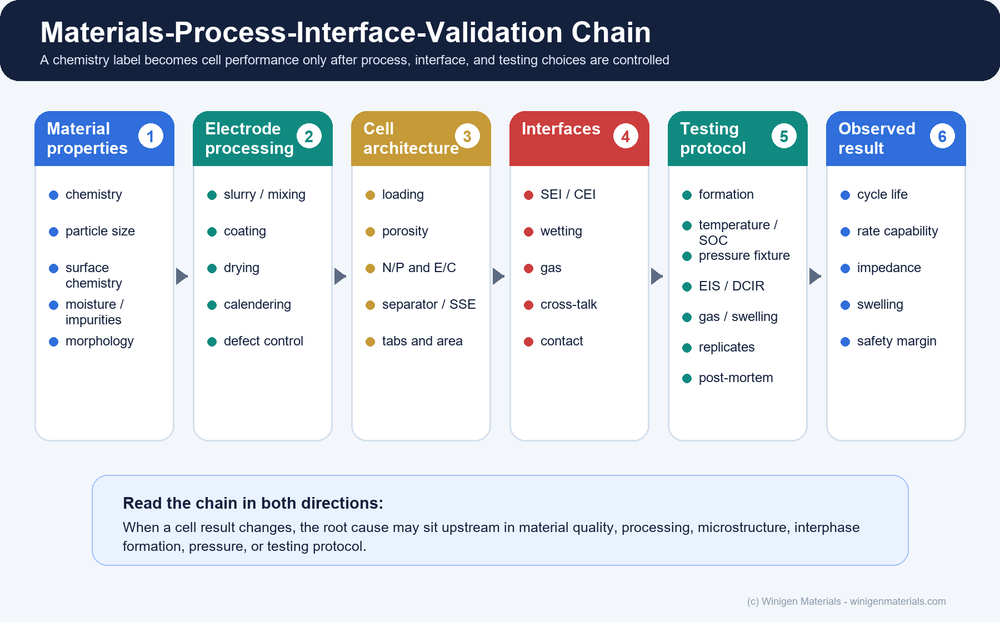
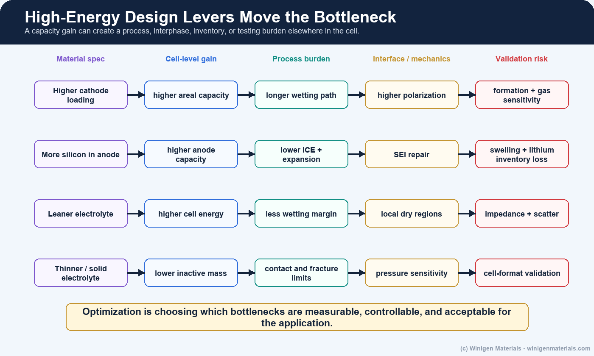
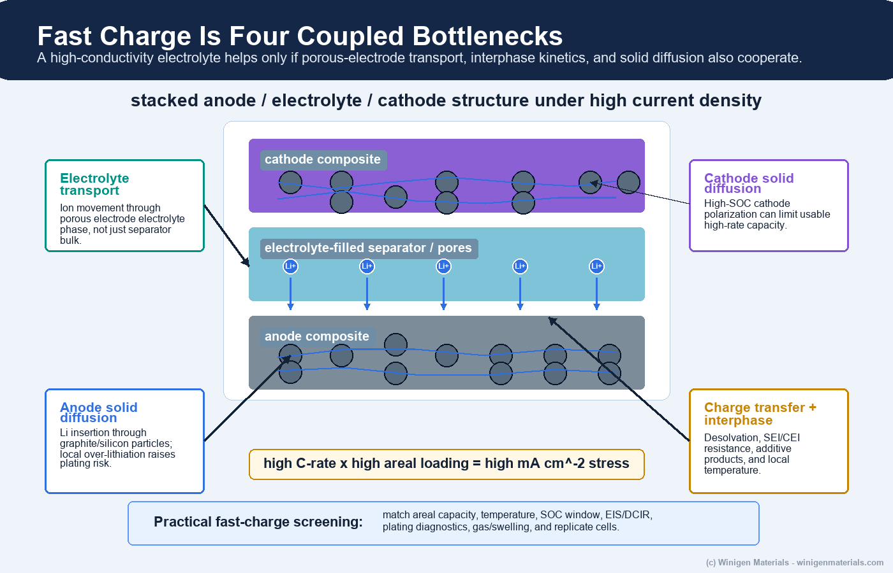
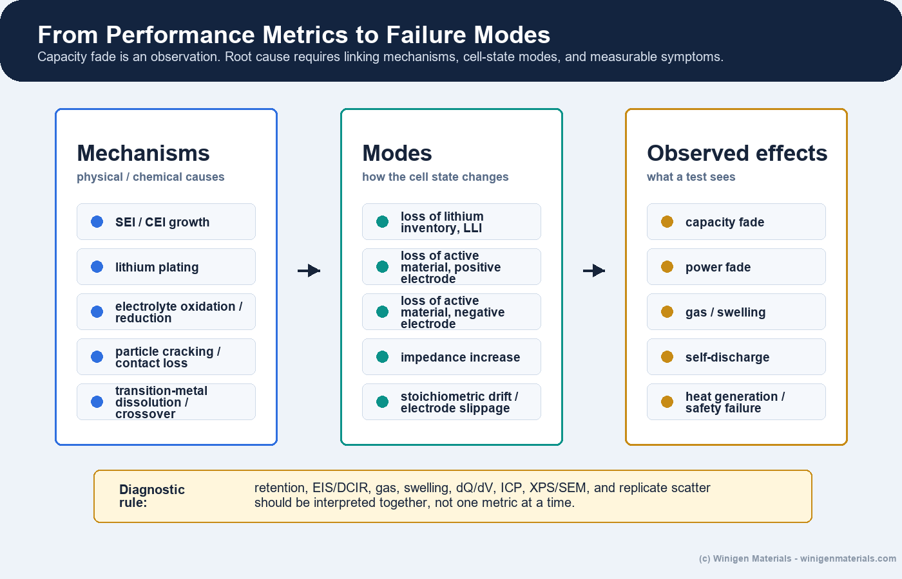
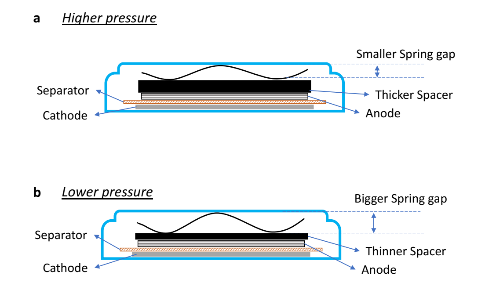
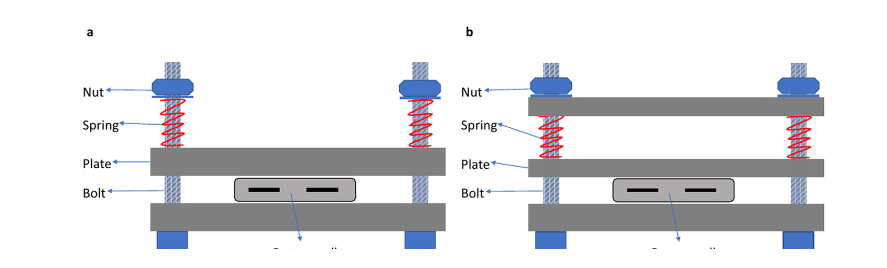
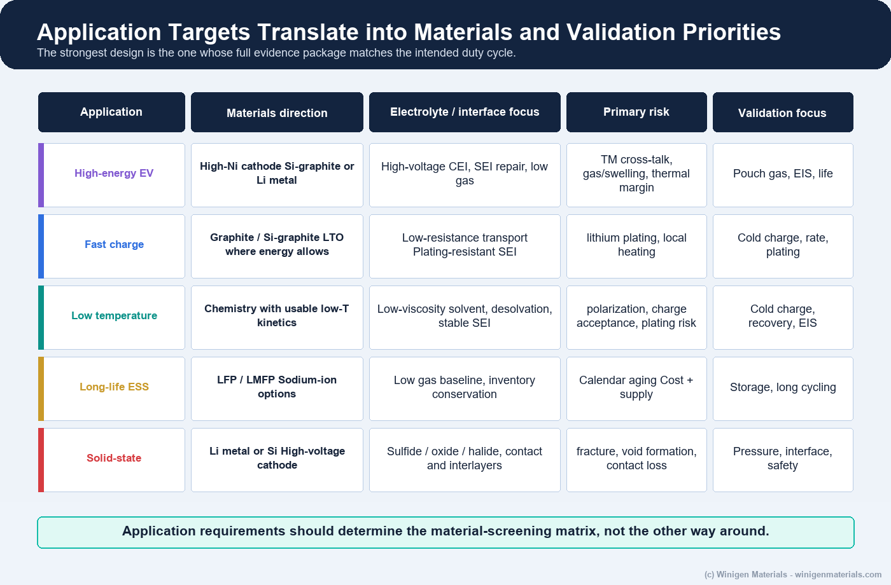

Battery systems are often introduced by a chemistry label: LFP, high-nickel NMC, sodium-ion, silicon-anode, lithium-metal, or solid-state. Those labels matter, but they are incomplete design descriptions. A chemistry label does not specify particle morphology, residual surface chemistry, slurry behavior, coating quality, electrode porosity, electrolyte wetting, interphase chemistry, N/P ratio, pressure condition, formation protocol, or aging pathway.
The stronger technical thesis is this: a battery chemistry label defines the thermodynamic and material opportunity, but delivered cell performance is a coupled outcome of material grade, electrode processability, microstructure, electrolyte/interphase chemistry, mechanical boundary conditions, and testing protocol. That is why two cells with the same nominal chemistry can show different rate capability, cycle life, gas generation, swelling, low-temperature behavior, and manufacturing yield.

1. Chemistry Labels Are Incomplete Design Descriptions
LFP, LMFP, high-nickel NMC, NCA, LCO, LNMO, sodium layered oxides, hard carbon, graphite, silicon-composite anodes, lithium metal, and solid-state electrolytes each carry different opportunities and constraints. LFP may offer safety and cycle-life advantages, while high-nickel cathodes target higher specific energy with more demanding thermal and interface control. Sodium-ion may improve resource resilience but must still satisfy cell-level energy, volume, hard-carbon, electrolyte, and manufacturing requirements. Lithium metal and solid-state designs can increase theoretical energy, but they introduce lithium inventory, interface, mechanics, and cost questions that must be validated in realistic cells [1].
In other words, chemistry selection sets a feasible region. It does not guarantee that the material can be mixed, coated, dried, wetted, formed, cycled, or scaled reproducibly. Practical optimization begins when the chemistry label is translated into material specifications, electrode architecture, electrolyte and additive strategy, cell balance, and validation evidence.
2. The Materials-to-Cell-Performance Chain
A useful development framework follows the causal path from material property to validation metric. The point is to avoid treating "cell data" as a single number detached from the process that created it.
| Stage | Technical question | Key variables |
|---|---|---|
| Active-material selection | What redox capacity and voltage are possible? | Chemistry, morphology, PSD, tap density, surface coating, residual alkali, moisture, impurities, practical capacity |
| Electrode processing | Can the material form a uniform scalable electrode? | Slurry rheology, solids loading, solvent route, binder, conductive network, coating speed, drying, calendering, defects |
| Cell architecture | Can ions and electrons move through the intended thickness and area? | Areal capacity, porosity, tortuosity, N/P ratio, E/C ratio, separator or solid electrolyte, overhang, pressure |
| Electrolyte and interfaces | Can interfaces form and remain stable? | Salt, solvent, additives, solvation, desolvation, SEI, CEI, gas, HF/water, transition-metal cross-talk |
| Validation | Does the result reproduce under realistic format and duty cycle? | Formation, pouch swelling, EIS/DCIR, gas, temperature, pressure, cell alignment, replicates, post-mortem evidence |
This chain should be read in both directions: when performance changes, the root cause may sit upstream in material quality, processing, microstructure, interphase formation, pressure, or testing protocol.
Wood et al. make this connection especially clear for high-energy lithium-ion manufacturing: slurry dispersion, coating, drying, electrolyte filling/wetting, and formation are not downstream formalities. They determine electrode architecture, quality, cost, and whether materials chemistry survives a manufacturable process [2].
3. Processing Can Move the Bottleneck
A powder that looks attractive by capacity, voltage, or purity may still fail as an electrode if it cannot be dispersed, coated, dried, calendered, wetted, or formed consistently. High solids loading can improve throughput but change slurry rheology. Higher coating speed can increase productivity but amplify streaks, pinholes, agglomeration, or thickness variation. Thicker electrodes increase areal capacity but make wetting, ionic transport, and formation more sensitive to pore structure and drying history [2].
This is why manufacturing should appear early in materials optimization. The process changes the microstructure, and the microstructure changes the electrochemical result.

4. Bulk Electrolyte Is Not the Same as Interphase Performance
Electrolyte optimization has two levels. The first is bulk transport: salt dissociation, ionic conductivity, viscosity, low-temperature behavior, and oxidative or reductive stability. The second is the interphase result: SEI and CEI composition, additive consumption, gas generation, impedance growth, cathode/anode cross-talk, and moisture or HF sensitivity.
Xu's electrolyte review is useful because it frames electrolyte behavior through solvation, interphase formation, high-voltage cathode stability, and interactions between electrodes rather than only through conductivity [3]. This distinction matters commercially. A high-conductivity salt or low-viscosity solvent can still fail if it produces an unstable SEI, excessive gas, aluminum corrosion, poor high-voltage CEI behavior, or transition-metal-driven anode contamination.
For Winigen's portfolio, this is the connection between lithium salts, sodium salts, low-moisture solvents, electrolyte additives, and custom formulation support. The useful question shifts from isolated component performance to whether the salt-solvent-additive package forms the right interphase under the intended electrode pair, voltage window, temperature, and formation protocol.
5. Fast Charge Has Four Bottlenecks, Not One
Fast charge is often reduced to a single target such as 10 to 80% SOC in a certain number of minutes. At the material level, the problem is more specific. Weiss et al. describe rate limitations through lithium diffusion in anode active material, lithium diffusion in cathode active material, lithium-ion transport through the porous-electrode electrolyte phase, and charge-transfer/desolvation/interphase transport at phase boundaries [4].
Those bottlenecks are coupled. A low-viscosity electrolyte may help porous-electrode transport, but graphite or silicon lithiation kinetics, SEI resistance, cathode high-SOC polarization, temperature, and local current distribution can still control plating risk. At realistic areal loading, a 4C charge can correspond to double-digit mA/cm2 current density. That makes the anode-side local environment far more important than a bulk conductivity value alone.

6. From Performance Metrics to Failure Modes
Capacity retention, rate capability, and impedance are observable effects, not root causes. Edge et al. separate degradation into mechanisms, modes, and operational symptoms. Mechanisms include SEI/CEI growth, lithium plating, electrolyte oxidation or reduction, particle cracking and contact loss, and transition-metal dissolution or crossover. Modes include loss of lithium inventory, loss of active material at either electrode, impedance increase, and stoichiometric drift or electrode slippage. The observed result may be capacity fade, power fade, gas or swelling, self-discharge, heat generation, or safety failure [5].
This distinction is important for product development. If a high-voltage cell loses capacity, the root cause may be cathode surface reconstruction, CEI thickening, electrolyte oxidation, gas, transition-metal cross-talk to the anode, lithium inventory loss, or an N/P and formation problem. The correct material response depends on which pathway is actually active.

7. High-Energy Cells: Capacity Gain Versus Validation Burden
High-energy designs often combine a high-capacity cathode, higher areal loading, silicon/SiOx/Si-C or lithium-metal anode, leaner electrolyte, thinner separator or current collector, and tighter cell balance. Each lever can improve a cell-level energy metric, but each also raises a different validation burden.
| High-energy lever | Potential benefit | New bottleneck to validate |
|---|---|---|
| High-nickel or high-voltage cathode | Higher cathode capacity or voltage | CEI growth, gas, transition-metal dissolution, thermal stability, electrolyte oxidation |
| Higher electrode loading | More mAh/cm2 and lower inactive fraction | Wetting, tortuosity, coating defects, polarization, temperature gradients |
| Silicon-containing anode | Higher anode capacity and possible lower anode mass | First-cycle loss, expansion, repeated SEI repair, swelling, additive consumption |
| Lean electrolyte | Higher practical energy density | Dry spots, local starvation, additive inventory, impedance growth, gas sensitivity |
| Thin separator or solid electrolyte | Lower inactive mass and shorter transport distance | Safety margin, mechanical robustness, contact loss, pressure sensitivity |
Schmuch et al. emphasize that material-level performance, production cost, and practical cell design must be evaluated together for automotive batteries [1]. In that sense, a high-energy materials program must connect cathode capacity with CEI stability, SEI behavior, gas generation, pressure response, formation, safety, and pouch-cell evidence.
8. Silicon and Lithium Metal Are Different Optimization Problems
Silicon-containing anodes behave differently from graphite-rich anodes with higher nominal capacity. Silicon introduces lower first-cycle efficiency, volume expansion, changing active surface area, repeated SEI repair, electrolyte consumption, and stronger sensitivity to binder, pressure, porosity, formation, and additive package. The practical N/P ratio and lithium inventory must therefore be interpreted with silicon utilization and swelling in mind.
Lithium metal changes the balancing question again. The negative electrode is no longer a conventional insertion host with a fixed reversible intercalation capacity. The key design variables become usable lithium inventory, lithium morphology, dead lithium formation, interfacial stability, stack pressure, current distribution, and separator or solid-electrolyte resistance. This is why lithium-metal and silicon-rich cells need failure-mode-specific validation rather than simple capacity matching.
9. Solid-State: Ion Transport, Mechanics, and Manufacturability
For solid-state batteries, ionic conductivity is only one axis. Kalnaus et al. emphasize the critical role of mechanics: solid-solid contact, pressure distribution, volume-change-driven contact loss, lithium deposition in defects or pores, fracture, and the need for thin solid electrolytes with low inactive mass all influence practical performance [6].
| Axis | Practical question | Typical evidence |
|---|---|---|
| Ion transport | Is conductivity sufficient in the actual pellet, composite, coating, or separator layer? | Ionic/electronic conductivity, PSD, density, EIS, temperature dependence |
| Mechanics | Can contact survive pressure, volume change, lithium deposition, and fracture? | Stack-pressure study, microscopy, interfacial EIS, cycling under realistic current density |
| Manufacturability | Can the electrolyte layer and composite cathode be made with low inactive fraction? | Particle size, slurry or dry-processing fit, coating quality, densification, handling sensitivity |
This connects directly to Winigen's sulfide, oxide, and halide solid-state electrolyte materials: product selection should consider particle-size distribution, moisture, impurity data, conductivity, electronic leakage, XRD/SEM support, and intended architecture rather than one conductivity headline.
10. Sodium-Ion Is System-Level Resource Optimization
Sodium-ion is often presented as a lower-cost alternative because sodium is abundant. Vaalma et al. make the more careful point: sodium-ion cost and resource advantages depend on the full cell, including cathode family, hard carbon, current collector choice, electrolyte, cell voltage, energy density, cobalt avoidance, and manufacturing scale [7]. In their analysis, replacing lithium and copper with sodium and aluminum gave a modest modeled battery cost reduction for a reference cell, with the current-collector change contributing more than the alkali-metal substitution alone.
The practical conclusion is that sodium-ion should be optimized as its own system. Sodium salts, carbonate and ether solvents, hard-carbon SEI additives, gas control, low-temperature transport, moisture limits, and formation protocol all need sodium-specific screening rather than direct transfer from lithium-ion assumptions.
11. Validation Itself Can Create Artifacts
Dai et al. highlight a point that is easy to understate: cell testing quality depends on cell preparation quality. Electrode uniformity, component dryness, alignment, electrolyte amount, pressure, fixture design, pouch-cell sealing, and sample-to-sample reproducibility can all change the measured result [8]. A poor validation setup can make a good material look bad, or make a fragile design look better than it really is.
Testing protocol is not neutral. Pressure, electrolyte amount, wetting time, fixture geometry, temperature gradient, and replicate count can change the measured ranking of candidate materials.

That pressure point is not a small detail. Effective pressure can change contact resistance, ionic pathway quality, local current distribution, lithium plating risk, and impedance. The same is true for electrolyte amount and wetting time in thick or high-loading electrodes, especially when moving from small fixtures to pouch cells.

12. Application Requirements Should Set the Screening Matrix
A high-energy EV cell, long-life ESS cell, fast-charge cell, low-temperature cell, sodium-ion cell, and solid-state cell do not need the same screening matrix. The validation plan should follow the dominant failure modes expected for the application.

| Application direction | Primary bottleneck | Minimum useful validation evidence |
|---|---|---|
| Fast-charge lithium-ion | Anode potential, transport, interphase resistance, local temperature | Matched EIS/DCIR, plating diagnostics, low-temperature charge, gas/swelling, replicate pouch cells |
| High-energy EV | High-voltage CEI, gas, silicon or lithium inventory, thermal margin | High-voltage storage, formation gas, thickness change, transition-metal analysis, cycle and safety data |
| ESS / long life | Calendar aging, gas, inventory conservation, cost | Calendar tests, long-duration EIS, gas/swelling, low-cost formulation comparison |
| Sodium-ion | Hard-carbon SEI, sodium salt/solvent compatibility, gas, low-temperature behavior | Full-cell formation, hard-carbon compatibility, temperature sweep, gas and impedance tracking |
| Solid-state | Interface contact, pressure, fracture, composite cathode transport | PSD/XRD/SEM, ionic and electronic conductivity, pressure-dependent EIS, symmetric-cell or full-cell interface tests |
13. From Lab Ranking to Reproducible Evidence
Coin cells and small laboratory fixtures are valuable for early ranking and mechanism studies because they require less material and allow controlled comparisons. But larger-area cells expose wetting distance, electrolyte amount, gas, swelling, pressure distribution, tab and current paths, electrode alignment, local N/P variation, and manufacturing scatter. A material that looks strong in an electrolyte-rich small format may need a different formulation or process window at pouch scale.
A strong evidence chain should include incoming material QC, controlled electrode preparation, half-cell and full-cell screening, formation optimization, pouch-cell validation, and failure analysis. Each stage should preserve traceability so that a performance change can be assigned to the material, electrode, assembly, protocol, or interaction rather than guessed. For lot-level documentation context, see Winigen's battery material COA and quality documentation page.
| Validation control | Why it matters | What to report |
|---|---|---|
| Electrode uniformity | Thickness, loading, and porosity variation can dominate apparent rate and life behavior. | Loading map, thickness, density/porosity, calendering condition, defect notes |
| Dryness and moisture | Water changes electrolyte chemistry, gas, HF, interphase growth, and salt stability. | Karl Fischer or moisture spec, drying protocol, handling environment |
| Alignment and overhang | Cathode/anode mismatch creates local current hotspots and false failure modes. | Alignment tolerance, overhang, separator dimensions, build method |
| Electrolyte amount and wetting | E/C ratio and wetting time affect local ionic pathways and additive inventory. | g/Ah, total electrolyte mass, vacuum fill/rest time, temperature, separator and electrode porosity |
| Pressure and fixture | Contact resistance and current distribution are pressure sensitive. | psi or MPa, fixture design, spacer/spring details, pressure calibration where available |
| Replicates and failure count | Single-cell wins can reflect build variation rather than material advantage. | n value, mean, standard deviation, failure mode count, excluded cells |
14. What Winigen Materials Contributes
For suppliers and developers, practical value comes from providing the material and helping define which material property should be controlled for the intended failure mode.
Winigen Materials supports this systems approach with cathode and anode active materials, lithium and sodium electrolyte salts, low-moisture solvents, electrolyte additives, solid-state sulfide, oxide, and halide materials, lithium metal foil, and custom formulation support. Product selection can be connected with target voltage, temperature, rate, loading, cell format, and failure mode rather than treated as a catalog-only purchase.
| Development bottleneck | Relevant Winigen material or support |
|---|---|
| High-voltage CEI, gas, and transition-metal cross-talk | LiPF6, LiFSI/co-salt strategy, fluorinated solvents, nitrile/phosphate/sulfur-containing additive screening |
| Fast charge and lithium plating risk | LiFSI systems, low-viscosity solvents, SEI additives, N/P and formation support, anode-grade selection |
| Silicon swelling, first-cycle loss, and SEI repair | Si, SiOx/Si-C, graphite, FEC/VC/additive screening, formation strategy, pouch validation support |
| Sodium-ion cost and resource strategy | Sodium salts, hard-carbon-compatible electrolyte components, sodium-ion material sourcing and formulation support |
| Solid-state interface and processing | Sulfide, oxide, and halide powders; PSD/conductivity/moisture data; solid-state material matching |
| R&D-to-pilot translation | Material selection, screening matrix design, and testing or validation coordination with strategic partners |
For programs needing broader development support, Winigen can also help arrange development, testing, and validation of customer materials, processes, and application demands with strategic partners. The objective is to assemble and test the materials package most likely to survive the customer's intended application and development stage, rather than prescribing one universal chemistry.
Battery development rarely fails because researchers chose the wrong chemistry. More often, it fails because the interaction between materials, processing, interfaces, and validation was not understood early enough. Every successful battery program eventually becomes a multidisciplinary optimization problem rather than a materials-selection problem alone.
Bottom Line
Battery chemistry is the first design decision, not the final answer. A successful cell requires the cathode and anode grades, electrolyte, additives, separator or solid electrolyte, electrode balance, interphases, formation protocol, and validation conditions to work as one system.
The strongest development programs do not ask which chemistry wins every metric. They define the application, map the likely failure modes, select a coherent materials package, and build an evidence chain that shows whether the design remains robust from controlled laboratory screening to practical cell formats.
Figure-Use Note
Original Winigen diagrams are conceptual illustrations. Third-party figures are reproduced only where licensing permits and are credited in captions.
References and Further Reading
- Schmuch, R. et al. Performance and cost of materials for lithium-based rechargeable automotive batteries. Nature Energy 3, 267-278 (2018).
- Wood, D. L. et al. Perspectives on the relationship between materials chemistry and roll-to-roll electrode manufacturing for high-energy lithium-ion batteries. Energy Storage Materials 29, 254-265 (2020).
- Xu, K. Electrolytes and Interphases in Li-Ion Batteries and Beyond. Chemical Reviews 114, 11503-11618 (2014).
- Weiss, M. et al. Fast Charging of Lithium-Ion Batteries: A Review of Materials Aspects. Advanced Energy Materials 11, 2101126 (2021).
- Edge, J. S. et al. Lithium ion battery degradation: what you need to know. Physical Chemistry Chemical Physics 23, 8200-8221 (2021).
- Kalnaus, S. et al. Solid-state batteries: The critical role of mechanics. Science 381, eabg5998 (2023).
- Vaalma, C. et al. A cost and resource analysis of sodium-ion batteries. Nature Reviews Materials 3, 18013 (2018).
- Dai, F. and Cai, M. Best practices in lithium battery cell preparation and evaluation. Communications Materials 3, 64 (2022). CC BY 4.0.
Discuss Your Battery Materials Optimization Program
Share your chemistry, operating window, performance target, current failure mode, and development stage. Winigen can help identify relevant material families and organize a practical screening or validation sequence.
Contact Winigen MaterialsAll original diagrams on this page are © Winigen Materials unless otherwise noted. They may not be reproduced, modified, or redistributed without permission. Third-party figures are credited in their captions and retain their stated licenses.